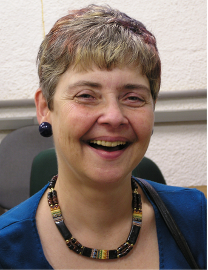

Mulheres na Tecnologia
Cláudia Maria Bauzer Medeiros
Engenheira eletrotécnica, doutora em Ciência da Computação, pesquisadora, comendadora da Ordem Nacional do Mérito Científico e membro titular da Academia Brasileira de Ciências. Cláudia foi presidente da Sociedade Brasileira de Computação de 2004 a 2007. Atualmente, é professora da Unicamp, onde fundou o Laboratory of Information Systems (LIS), e professora visitante da Universidade Paris-Dauphine, onde, em 2015, conquistou o título de Dra. Honoris Causa. Tem diversos reconhecimentos internacionais por suas pesquisas e por fomentar a participação de mulheres na área de TI. Desenvolve pesquisas em gerenciamento de dados científicos, desafios associados à heterogeneidade, volume e complexidade desses dados, para vários tipos de aplicações multidisciplinares do mundo real, em particular em biodiversidade e planejamento agro-ambiental. Dentre os prêmios recebidos destacam-se Doctor Honoris Causa pela Universidad Antenor Orrego, Trujillo, Peru (2007); Ordem Nacional do Mérito Científico, como Comendadora (2008); Doctor Honoris Causa pela Universite Paris Dauphine, França e o Prêmio de Mérito Latino-Americano em Informática, outorgado pelo Centro de Estudios Latino Americanos en Informatica – CLEI (2018), Chile. Além da ABC, é membro do Conselho Científico do Sistema de Mundial de Dados (WDS, na sigla em inglês).
